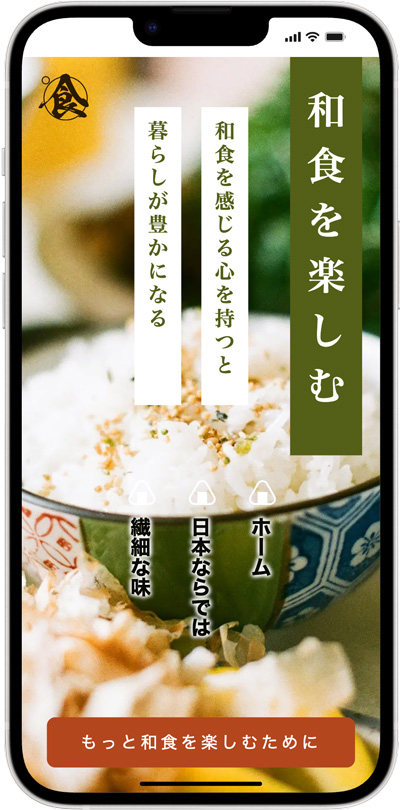

縦書き - レイアウト
完成例

縦書き（日本語の表現）
- 縦書き（右から左：right to left）
writing-mode: vertical-rl;
テキスト
- 縦書きのテーマは、自分で作ってみる
- 「季節を楽しむ」
- 「お茶を楽しむ」
- 「和服を楽しむ」
和食を楽しむ 和食を感じる心を持つと 暮らしが豊かになる ホーム 日本ならでは 繊細な味 もっと和食を楽しむために
記述例
index.html
<!DOCTYPE html> <html lang="ja"> <head> <meta charset="UTF-8"> <meta name="viewport" content="width=device-width, initial-scale=1.0"> <title>夏を楽しむ【縦書き】</title> <link rel="stylesheet" href="css/style.css"> </head> <body> <!-- header --> <header class="header"> <div class="container"> <h1>和食を楽しむ</h1> <div class="lead"> <p>和食を感じる心を持つと</p> <p>暮らしが豊かになる</p> </div><!-- /.lead --> <nav class="gnav"> <ul> <li><a href="#">ホーム</a></li> <li><a href="#">日本ならでは</a></li> <li><a href="#">繊細な味</a></li> </ul> </nav> <p class="logo"><img src="img/logo.svg" alt=""></p> </div><!-- /.container --> <div class="more_btn"> <a href="#">もっと和食を楽しむために</a> </div><!-- /.more_btn --> </header> <!-- /header --> </body> </html>
style.css
- CSSネストではなく、ノーマルな記述で完成させます
- カスタムプロパティを設定し利用して記述します
@charset "UTF-8"; :root { --main-color: #535f17; --color: #b3461e; --bright-color: #fff; } /* ---------------------------------------------- reset ---------------------------------------------- */ *, *::before, *::after { margin: 0; padding: 0; box-sizing: border-box; } ul { list-style: none; } a { color: inherit; text-decoration: none; } img { max-width: 100%; vertical-align: bottom; } html { font-size: 62.5%; /* 16px X 0.625 ≒ 10px */ } /* ---------------------------------------------- body ---------------------------------------------- */ body { background-color: var(--bright-color); color: #0a0b00; font-size: 1.6rem; /* 16px */ font-family: serif; line-height: 1.0; } /* ---------------------------------------------- layout ---------------------------------------------- */ .container { width: min(90%, 1240px); /* min(最小値, 最大値) */ margin: 0 auto; }
- 文字のレイアウト指定
/* ---------------------------------------------- header ---------------------------------------------- */ .header { background: url(../img/washoku.webp) no-repeat center center / cover; width: 100%; height: 100vh; position: relative; /* ロゴの基準位置 */ } /* ------------- text area ------------- */ .header > .container { display: flex; flex-direction: row-reverse; /* 横並びを右から始める */ } h1 { margin-left: 50px; padding: 60px 20px; background-color: #535F17; color: #fff; font-size: 6.0rem; /* 60px */ writing-mode: vertical-rl; /* 縦書き */ letter-spacing: 2.0rem; /* 10px X 2 ≒ 20px */ font-weight: bold; } .lead { margin: 60px 0 0 20px; height: fit-content; writing-mode: vertical-rl; } .lead > p { margin-left: 24px; padding: 1.6rem 1.6rem 3.2rem; background-color: #fff; color: #535F17; font-size: 3.2rem; font-weight: bold; letter-spacing: 0.4rem; } @media screen and (max-width: 767px) { h1 { padding: 40px 20px; font-size: 4.6rem; } .lead > p { margin-left: 24px; padding: 1.6rem 1.6rem 3.2rem; background-color: #fff; color: #535F17; font-size: 2.4rem; } } /* ------------- logo image ------------- */ .logo > img { width: 100px; margin-top: 40px; position: absolute; top: -20px; left: 20px; } @media screen and (max-width: 767px) { .logo > img { width: 60px; } } /* -------- CTA (Call to Action) -------- */ .more_btn { position: absolute; left: 50%; bottom: 30px; transform: translateX(-50%); text-align: center; } .more_btn > a { display: inline-block; padding: 20px 40px; background-color: #b4461e; color: #fff; font-family: sans-serif; font-size: 2.0rem; letter-spacing: 0.4rem; white-space: nowrap; border-radius:10px; } /* ---------------------------------------------- nav ---------------------------------------------- */ .gnav { margin: 60px 0 0 auto; writing-mode: vertical-rl; } li { font-size: 2.4rem; font-family: sans-serif; font-weight: bold; position: relative; } .gnav a { display: block; padding-top: 50px; line-height: 3.0; text-shadow: 0 0 6px #fff, 0 0 6px #fff, 0 0 6px #fff, 0 0 6px #fff; } .gnav a::before { content: ""; padding: 16px; position: absolute; top: 5px; left: 30%; background: url(../img/onigiri.png) no-repeat center center / contain; } @media screen and (max-width: 767px) { .gnav { position: absolute; top: 50%; left: 50%; transform: translateX(-50%); } }
CSSネスト
- ネストにする場合は、ノーマルな記述を終了してから行いましょう
- 上記が完成させた後であれば、AIを使っても「CSS Nesting」が可能です
nest.css
@charset "UTF-8"; :root { --main-color: #535f17; --color: #b3461e; --bright-color: #fff; } /* ---------------------------------------------- reset ---------------------------------------------- */ *, *::before, *::after { margin: 0; padding: 0; box-sizing: border-box; } ul { list-style: none; } a { color: inherit; text-decoration: none; } img { max-width: 100%; vertical-align: bottom; } html { font-size: 62.5%; /* 16px X 0.625 ≒ 10px */ } /* ---------------------------------------------- body ---------------------------------------------- */ body { background-color: var(--bright-color); color: #0a0b00; font-size: 1.6rem; /* 16px */ font-family: serif; line-height: 1.0; } /* ---------------------------------------------- layout ---------------------------------------------- */ .container { width: min(90%, 1240px); /* min(最小値, 最大値) */ margin: 0 auto; } /* ---------------------------------------------- header ---------------------------------------------- */ .header { background: url(../img/washoku.webp) no-repeat center center / cover; width: 100%; height: 100vh; position: relative; /* ロゴの基準位置 */ /* ------------- text area ------------- */ > .container { display: flex; flex-direction: row-reverse; /* 横並びを右から始める */ } } h1 { margin-left: 50px; padding: 60px 20px; background-color: #535F17; color: #fff; font-size: 6.0rem; /* 60px */ writing-mode: vertical-rl; /* 縦書き */ letter-spacing: 2.0rem; /* 10px X 2 ≒ 20px */ font-weight: bold; @media screen and (max-width: 767px) { padding: 40px 20px; font-size: 4.6rem; } } .lead { margin: 60px 0 0 20px; height: fit-content; writing-mode: vertical-rl; > p { margin-left: 24px; padding: 1.6rem 1.6rem 3.2rem; background-color: #fff; color: #535F17; font-size: 3.2rem; font-weight: bold; letter-spacing: 0.4rem; @media screen and (max-width: 767px) { margin-left: 24px; padding: 1.6rem 1.6rem 3.2rem; background-color: #fff; color: #535F17; font-size: 2.4rem; } } } /* ------------- logo image ------------- */ .logo { > img { width: 100px; margin-top: 40px; position: absolute; top: -20px; left: 20px; @media screen and (max-width: 767px) { width: 60px; } } } /* -------- CTA (Call to Action) -------- */ .more_btn { position: absolute; left: 50%; bottom: 30px; transform: translateX(-50%); text-align: center; > a { display: inline-block; padding: 20px 40px; background-color: #b4461e; color: #fff; font-family: sans-serif; font-size: 2.0rem; letter-spacing: 0.4rem; white-space: nowrap; border-radius: 10px; } } /* ---------------------------------------------- nav ---------------------------------------------- */ .gnav { margin: 60px 0 0 auto; writing-mode: vertical-rl; li { font-size: 2.4rem; font-family: sans-serif; font-weight: bold; position: relative; } a { display: block; padding-top: 50px; line-height: 3.0; text-shadow: 0 0 6px #fff, 0 0 6px #fff, 0 0 6px #fff, 0 0 6px #fff; &::before { content: ""; padding: 16px; position: absolute; top: 5px; left: 30%; background: url(../img/onigiri.png) no-repeat center center / contain; } } @media screen and (max-width: 767px) { position: absolute; top: 50%; left: 50%; transform: translateX(-50%); } }